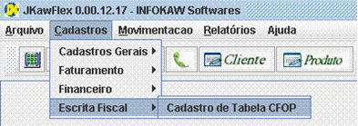

![[IMAGE]](images/barracad.gif)
![[IMAGE]](images/barracad2.gif)
|  | 1. Para efetuar o CADASTRO DE ESCRITA FISCAL, selecione na barra de Menu a op��o CADASTROS, em seguida ESCRITA FISCAL, e CADASTRO DE TABELA CFOP. |
|
2. Antes de preencher os campos, clique em INSERIR NOVO REGISTRO situado na barra de Op��es. |
|
3. Ap�s preencher os campos, clique no bot�o VALIDAR REGISTRO CORRENTE situado na barra de Op��es, e em seguida clique no bot�o SALVAR. |